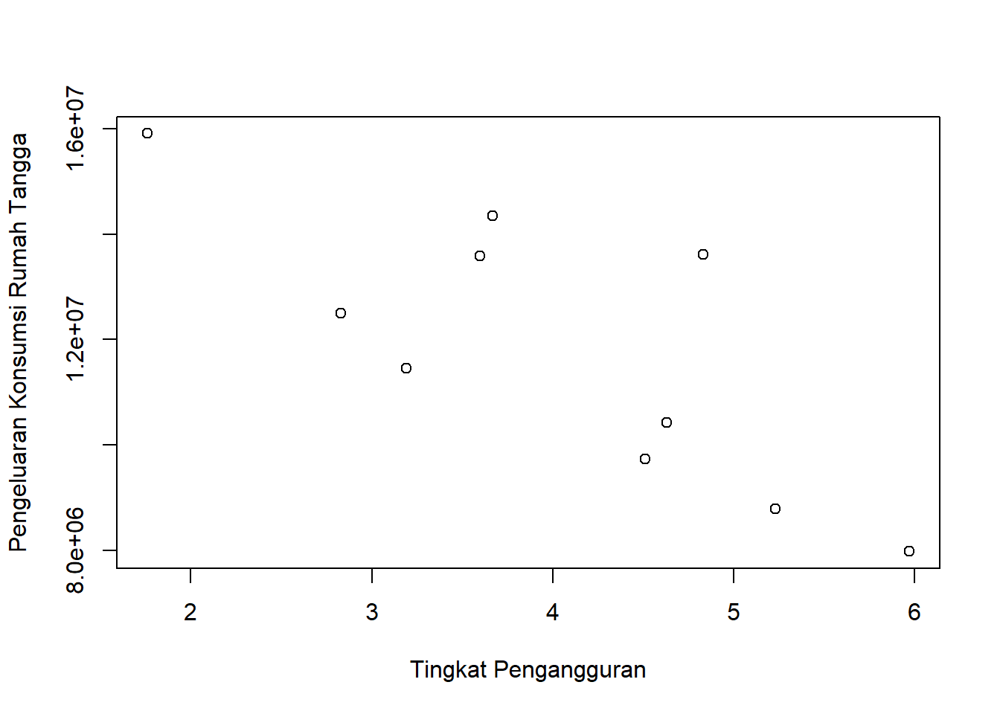

library(tidyverse)
library(readxl)
library(WDI) # tambahkan library lain jika diperlukanPengaruh Tingkat Pengangguran Terhadap Pengeluaran Konsumsi Rumah Tangga di Kabupaten Rembang, Jawa Tengah Tahun 2013-2022
Metode Penelitian Politeknik APP Jakarta

1 Pendahuluan
1.1 Latar belakang
Tingkat Pengangguran adalah salah satu indikator penting dari kondisi perekonomian suatu negara. Tingkat Pengangguran yang tinggi menunjukkan bahwa ada banyak orang yang tidak memiliki pekerjaan dan sumber pendapatan. Hal ini dapat berdampak negatif terhadap perekonomian secara keseluruhan, termasuk pengeluaran konsumsi rumah tangga.
Pengeluaran konsumsi rumah tangga adalah salah satu komponen utama dari perekonomian suatu negara. Pengeluaran konsumsi rumah tangga yang tinggi menunjukkan bahwa masyarakat memiliki daya beli yang tinggi menunjukkan bahwa masyarakat memiliki daya beli yang tinggi dan dapat meningkatkan permintaan terhadap barang dan jasa. Hal ini dapat mendorong pertumbuhan ekonomi.
1.2 Ruang lingkup
Ruang lingkup pada penelitian ini memuat variable mengenai Tingkat Pengangguran di Kabupaten Rembang, Jawa Tengah dan Pengeluaran Konsumsi Rumah Tangga di Kabupaten Rembang, Jawa Tengah. Data yang digunakan adalah data yang bersifat time series dalam kurun waktu 2013-2022 dengan satuan persen dan Juta Rupiah. Data tersebut menjadi objek penelitian ini.
1.3 Rumusan masalah
Berdasarkan uraian latar belakang di atas, maka yang menjadi rumusan masalah pada penelitian ini adalah:
- Apakah Tingkat Pengangguran berpengaruh besar pada Pengeluaran Konsumsi Rumah Tangga di Kabupaten Rembang, Jawa Tengah?
1.4 Tujuan dan manfaat penelitian
Tujuan penelitian ini untuk mengetahui seberapa pengaruhnya Tingkat Pengangguran di Rembang, Jawa Tengah terkait terhadap Pengeluaran Konsumsi Rumah Tangga di Kabupaten Rembang, Jawa Tengah.
Manfaat penelitian ini memberitahu masyarakat mengenai pengaruhnya tingkat pengangguran terhadap Pengeluaran Konsumsi Rumah tangga sehingga dapat mengatur keuangannya lebih baik dan semangat untuk mencari pekerjaan.
1.5 Package
Ini tidak wajib ada di tulisan anda tapi anda dapat menunjukkan Packages yang digunakan antara lain sebagai berikut:
2 Studi pustaka
Sukirno (1994) mendefinisikan pengangguran sebagai suatu keadaan dimana seseorang yang sudah bekerja mencari pekerjaan namun belum dapat memperoleh pekerjaan.
Pengeluaran Konsumsi Rumah Tangga merupakan pengeluaran uang yang dapat dibelanjakan oleh rumah tangga untuk memenuhi kebutuhan sehari-hari melalui pembelian produk dan jasa akhir.
3 Metode penelitian
3.1 Data
| Tahun | Tingkat Pengangguran (x) | Pengeluaran Konsumsi Rumah Tangga (Y) |
|---|---|---|
| 2013 | 5,97 | 7.976.937,08 |
| 2014 | 5,23 | 8.782.543,17 |
| 2015 | 4,51 | 9.731.003,28 |
| 2016 | 4,63 | 10.426.703,88 |
| 2017 | 3,19 | 11.452.740,57 |
| 2018 | 2,83 | 12.491.052,22 |
| 2019 | 3,6 | 13.587.783,71 |
| 2020 | 4,83 | 13.613.167,54 |
| 2021 | 3,67 | 14.345.785,6 |
| 2022 | 1,76 | 15.909.115,87 |
dat<-read_excel('C:/Metopel UAS 2024/UAS 2024/Data Rembang BPS.xlsx')plot(dat$X,dat$Y,xlab="Tingkat Pengangguran",ylab="Pengeluaran Konsumsi Rumah Tangga")
3.2 Metode analisis
Metode yang dipilih adalah regresi univariat atau Ordinary Least Square (OLS) dengan 1 variabel independen. Penelitian ini merbaksud mencari hubungan antara hwy dan cty. Spesifikasi yang dilakukan adalah:
\[ y_{t}=\beta_0 + \beta_1 x_t+\mu_t \] di mana \(y_t\) adalah Pengeluaran Konsumsi Rumah Tangga dan \(x_t\) adalah Tingkat Pengangguran.
4 Pembahasan
4.1 Pembahasan masalah
Dikarenakan penelitian ini menggunakan OLS, Pembahasan yang diberikan mengenai hubungan antara Tingkat Pengangguran dan jumlah Pengeluaran Konsumsi Rumah Tangga. Data tersebut digabungkan dan dilakukan regresi sehingga tampilannya seperti ini
4.2 Analisis masalah
Hasil regresinya adalah
reg1<-lm(Y~X,data=dat)
summary(reg1)
Call:
lm(formula = Y ~ X, data = dat)
Residuals:
Min 1Q Median 3Q Max
-1738458 -1235105 -541570 895217 3101782
Coefficients:
Estimate Std. Error t value Pr(>|t|)
(Intercept) 18403761 1889557 9.740 1.03e-05 ***
X -1634032 450647 -3.626 0.00672 **
---
Signif. codes: 0 '***' 0.001 '**' 0.01 '*' 0.05 '.' 0.1 ' ' 1
Residual standard error: 1689000 on 8 degrees of freedom
Multiple R-squared: 0.6217, Adjusted R-squared: 0.5744
F-statistic: 13.15 on 1 and 8 DF, p-value: 0.0067245 Kesimpulan
Dari hasil regresi dapat dilihat terdapat hubungan negatif yang signifikan antara tingkat pengangguran dan pengeluaran konsumsi rumah tangga. Dengan koefisien X (-1634032) menunjukkan bahwa untuk setiap peningkatab satu unit dalam X, Y diperkirakan menurun sebesar 1634032, dengan p-value <0,05
6 Referensi
Badan Pusat Statistik. (n.d). Retrieved January 23, 2024, from https://jateng.bps.go.id/indicator/6/64/1/tingkat-pengangguran-terbuka-tpt-.html
Badan Pusat Statistik. (n.d). Retrieved January 23, 2024, from https://rembangkab.bps.go.id/indicator/159/112/3/pdrb-atas-dasar-harga-berlaku-menurut-pengeluaran.html
Hartani, K. A. (2014). Faktor-Faktor Yang Mempengaruhi Konsumsi Rumah Tangga Di Indonesia Tahun 1981-2012 (Doctoral dissertation, UNIVERSITAS AIRLANGGA)